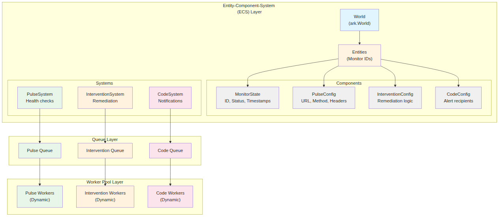

API Reference¶
This document provides comprehensive API reference documentation for all exported functions and types in the CPRA monitoring system.
Package: internal/controller¶
The controller package manages the ECS (Entity-Component-System) world and its systems using ark-tools (a Go ECS library from github.com/mlange-42/ark).
Key Concepts: - Entity: A unique ID representing a monitor - Component: Data attached to entities (e.g., MonitorState, PulseConfig) - System: Logic that processes entities with specific components

For a comprehensive overview of the system architecture, see the Architecture Overview document.
It orchestrates the entire application flow including initialization, monitoring, and lifecycle management.
Functions¶
DefaultConfig() Config¶
- Purpose: Returns a default configuration for the Controller
- Parameters: None
- Returns: Config - A Config struct with sensible defaults
- Errors: None
- Example:
NewController(config Config) *Controller¶
- Purpose: Creates a new controller with the refactored systems using ark-tools
- Parameters:
- config (Config) - Configuration for the controller including queue settings, worker pool config, and batch processing parameters
- Returns: *Controller - A fully initialized controller ready to load monitors and start processing
- Errors: Fatal errors logged if queue or worker pool creation fails
- Example:
InitializeLoggers(debugMode bool)¶
- Purpose: Initializes all system loggers with the specified debug mode. Must be called before using the controller to set up package-level loggers (SystemLogger, SchedulerLogger, etc.)
- Parameters:
- debugMode (bool) - Whether to enable debug-level logging
- Returns: None
- Errors: None
- Example:
CloseLoggers()¶
- Purpose: Closes all system loggers and flushes buffered log entries. Should be called on application shutdown (typically with defer)
- Parameters: None
- Returns: None
- Errors: None
- Example:
InitializeTracers(enabled bool)¶
- Purpose: Initializes distributed tracing for all components
- Parameters:
- enabled (bool) - Whether to enable tracing
- Returns: None
- Errors: None
- Example:
StartPeriodicCleanup(interval, maxAge time.Duration)¶
- Purpose: Starts periodic cleanup of old trace spans to prevent memory leaks
- Parameters:
- interval (time.Duration) - How often to run cleanup
- maxAge (time.Duration) - Maximum age of spans to retain
- Returns: None
- Errors: None
- Example:
NewLogger(component string, debugMode bool) *Logger¶
- Purpose: Creates a new logger for a specific component
- Parameters:
- component (string) - Name of the component for log prefixing
- debugMode (bool) - Whether to enable debug-level logging
- Returns: *Logger - A configured logger instance
- Errors: None
- Example:
NewMemoryManager(maxMemoryGB uint64, gcIntervalSeconds int) *MemoryManager¶
- Purpose: Creates a memory manager that monitors and controls application memory usage
- Parameters:
- maxMemoryGB (uint64) - Maximum memory in gigabytes before triggering GC
- gcIntervalSeconds (int) - Interval between GC cycles
- Returns: *MemoryManager - A configured memory manager
- Errors: None
- Example:
NewMetricsAggregator() *MetricsAggregator¶
- Purpose: Creates a metrics aggregator for collecting system performance metrics
- Parameters: None
- Returns: *MetricsAggregator - A new metrics aggregator instance
- Errors: None
- Example:
NewRecoverySystem(maxErrors int, resetWindow time.Duration) *RecoverySystem¶
- Purpose: Creates a recovery system that tracks errors and provides circuit breaker functionality
- Parameters:
- maxErrors (int) - Maximum errors before triggering recovery
- resetWindow (time.Duration) - Time window for error counting
- Returns: *RecoverySystem - A configured recovery system
- Errors: None
- Example:
NewTracer(component string, enabled bool) *Tracer¶
- Purpose: Creates a distributed tracer for a specific component
- Parameters:
- component (string) - Name of the component being traced
- enabled (bool) - Whether tracing is enabled
- Returns: *Tracer - A configured tracer instance
- Errors: None
- Example:
Controller Methods¶
(*Controller) LoadMonitors(ctx context.Context, filename string) error¶
- Purpose: Loads monitors using the streaming loader from a YAML or JSON file
- Parameters:
- ctx (context.Context) - Context for cancellation
- filename (string) - Path to the monitor configuration file
- Returns: error - Error if loading fails
- Errors: Returns error if file cannot be read, parsed, or entities cannot be created
- Example:
(*Controller) Start() error¶
- Purpose: Begins the main processing loop of the controller
- Parameters: None
- Returns: error - Error if controller is already running
- Errors: Returns error if controller is already started
- Example:
(*Controller) Stop()¶
- Purpose: Gracefully shuts down the controller
- Parameters: None
- Returns: None
- Errors: None
- Example:
(Controller) GetWorld() ecs.World¶
- Purpose: Returns the ECS world for external access (e.g., testing, debugging)
- Parameters: None
- Returns: *ecs.World - The underlying ECS world
- Errors: None
- Example:
(*Controller) PrintShutdownMetrics()¶
- Purpose: Logs queue, worker pool, and world statistics at shutdown
- Parameters: None
- Returns: None
- Errors: None
- Example:
(*Controller) CheckEntityCountAndSwitchQueue()¶
- Purpose: Monitors entity count and switches queues if threshold exceeded
- Parameters: None
- Returns: None
- Errors: None
- Example:
Package: internal/queue¶
The queue package implements the worker pool and queue patterns that form the basis of the project's concurrency model.
Functions¶
NewQueue(config QueueConfig) (Queue, error)¶
- Purpose: Creates a new queue based on the provided configuration
- Parameters:
- config (QueueConfig) - Configuration specifying queue type and parameters
- Returns:
- Queue - The created queue interface implementation
- error - Error if queue creation fails
- Errors: Returns error if configuration is invalid or queue cannot be initialized
- Example:
DefaultQueueConfig() QueueConfig¶
- Purpose: Returns the default queue configuration
- Parameters: None
- Returns: QueueConfig - A QueueConfig with sensible defaults
- Errors: None
- Example:
NewDynamicWorkerPool(q Queue, config WorkerPoolConfig, logger log.Logger) (DynamicWorkerPool, error)¶
- Purpose: Creates a new dynamic worker pool that executes jobs from a queue
- Parameters:
- q (Queue) - The queue to consume jobs from
- config (WorkerPoolConfig) - Worker pool configuration
- logger (*log.Logger) - Logger for worker pool events
- Returns:
- *DynamicWorkerPool - The created worker pool
- error - Error if worker pool creation fails
- Errors: Returns error if ants pool cannot be created or configuration is invalid
- Example:
DefaultWorkerPoolConfig() WorkerPoolConfig¶
- Purpose: Returns a default configuration for the worker pool
- Parameters: None
- Returns: WorkerPoolConfig - A WorkerPoolConfig with sensible defaults
- Errors: None
- Example:
NewResultRouter(config WorkerPoolConfig, logger log.Logger) ResultRouter¶
- Purpose: Creates a new result router with buffered channels
- Parameters:
- config (WorkerPoolConfig) - Configuration for result channel depths
- logger (*log.Logger) - Logger for routing events
- Returns: *ResultRouter - A configured result router
- Errors: None
- Example:
MmcWait(lambda, mu float64, c int, ca, cs float64) (wq, w float64, err error)¶
- Purpose: Calculates average wait times using queueing theory. This helps predict how many workers you need to meet latency targets. Returns Wq (queue wait time) and W (total time) for an M/M/c queue; if Ca,Cs > 0, applies Allen–Cunneen variability inflation
Simplified: Given a job arrival rate and processing time, this tells you how long jobs will wait in the queue
- Parameters:
- lambda (float64) - Arrival rate (jobs/sec) - how fast jobs arrive
- mu (float64) - Service rate per server (jobs/sec) - how fast one worker processes jobs
- c (int) - Number of servers (workers)
- ca (float64) - Coefficient of variation for arrivals (0 for exponential, use 0 if unsure)
- cs (float64) - Coefficient of variation for service (0 for exponential, use 0 if unsure)
- Returns:
- wq (float64) - Average waiting time in queue (seconds)
- w (float64) - Average total time in system (seconds) = waiting + processing
- err (error) - Error if system is unstable or parameters invalid
- Errors: Returns error if rho >= 1 (unstable system - more jobs arriving than can be processed) or invalid parameters
- Example:
FindCForSLO(lambda, tau, wTarget, ca, cs float64, cMax int) (int, float64, error)¶
- Purpose: Finds the minimum number of workers needed to meet your latency target (SLO = Service Level Objective)
Simplified: "I want jobs to complete in under 100ms - how many workers do I need?"
- Parameters:
- lambda (float64) - Arrival rate (jobs/sec)
- tau (float64) - Service time per job (seconds)
- wTarget (float64) - Target total latency SLO (seconds)
- ca (float64) - Coefficient of variation for arrivals
- cs (float64) - Coefficient of variation for service
- cMax (int) - Maximum workers to search (0 for default 1M)
- Returns:
- int - Minimum number of workers needed
- float64 - Predicted wait time with that worker count
- error - Error if no solution found or invalid parameters
- Errors: Returns error if no worker count meets SLO within cMax
- Example:
RecommendCFromObserved(qs Stats, wp WorkerPoolStats, wqTarget time.Duration, ca, cs float64) (int, float64, error)¶
- Purpose: Computes a recommended worker count from observed queue and worker pool statistics
- Parameters:
- qs (Stats) - Queue statistics including arrival and service rates
- wp (WorkerPoolStats) - Worker pool statistics
- wqTarget (time.Duration) - Target queue wait time
- ca (float64) - Coefficient of variation for arrivals
- cs (float64) - Coefficient of variation for service
- Returns:
- int - Recommended worker count
- float64 - Predicted wait time
- error - Error if insufficient data or computation fails
- Errors: Returns error if no arrivals observed or insufficient throughput data
- Example:
Queue-Specific Constructors¶
NewAdaptiveQueue(capacity uint64) (*AdaptiveQueue, error)¶
- Purpose: Creates an adaptive queue that adjusts its behavior based on load
- Parameters:
- capacity (uint64) - Initial capacity (must be power of 2)
- Returns:
- *AdaptiveQueue - The created adaptive queue
- error - Error if capacity is invalid
- Errors: Returns error if capacity is not a power of 2
- Example:
NewWorkivaQueue(capacity int) Queue¶
- Purpose: Creates a Workiva ring buffer based queue
- Parameters:
- capacity (int) - Queue capacity
- Returns: Queue - The created queue
- Errors: None
- Example:
NewHybridQueue(config HybridQueueConfig) (*HybridQueue, error)¶
- Purpose: Creates a hybrid queue combining ring buffer and heap with configurable drop policy
- Parameters:
- config (HybridQueueConfig) - Configuration including drop policy and capacities
- Returns:
- *HybridQueue - The created hybrid queue
- error - Error if configuration is invalid
- Errors: Returns error if ring capacity is not a power of 2
- Example:
DefaultHybridQueueConfig() HybridQueueConfig¶
- Purpose: Returns default configuration for hybrid queue
- Parameters: None
- Returns: HybridQueueConfig - Default hybrid queue configuration
- Errors: None
- Example:
NewBoundedQueue(config BoundedQueueConfig) *BoundedQueue¶
- Purpose: Creates a bounded queue with fixed capacity
- Parameters:
- config (BoundedQueueConfig) - Configuration for the bounded queue
- Returns: *BoundedQueue - The created bounded queue
- Errors: None
- Example:
DynamicWorkerPool Methods¶
(*DynamicWorkerPool) Start()¶
- Purpose: Begins the worker pool's operations
- Parameters: None
- Returns: None
- Errors: None
- Example:
(*DynamicWorkerPool) DrainAndStop()¶
- Purpose: Waits for outstanding tasks to finish before stopping the worker pool
- Parameters: None
- Returns: None
- Errors: None
- Example:
(DynamicWorkerPool) GetRouter() ResultRouter¶
- Purpose: Returns the result router for accessing type-specific result channels
- Parameters: None
- Returns: *ResultRouter - The result router instance
- Errors: None
- Example:
(*DynamicWorkerPool) Stats() WorkerPoolStats¶
- Purpose: Returns runtime statistics for the worker pool
- Parameters: None
- Returns: WorkerPoolStats - Current worker pool statistics
- Errors: None
- Example:
(*DynamicWorkerPool) Pause()¶
- Purpose: Temporarily stops the worker pool from processing new tasks
- Parameters: None
- Returns: None
- Errors: None
- Example:
(*DynamicWorkerPool) Resume()¶
- Purpose: Resumes worker pool processing after a pause
- Parameters: None
- Returns: None
- Errors: None
- Example:
(*DynamicWorkerPool) ReplaceQueue(newQueue Queue) error¶
- Purpose: Replaces the current queue with a new one for dynamic queue switching
- Parameters:
- newQueue (Queue) - The new queue to use
- Returns: error - Error if newQueue is nil
- Errors: Returns error if newQueue is nil
- Example:
Package: internal/controller/components¶
The components package defines the consolidated Entity-Component-System (ECS) components for the CPRA monitoring application.
Types and Methods¶
MonitorState¶
MonitorState consolidates all monitor state into a single component with bitfield-based state management.
State Check Methods:
- IsPulseNeeded() bool - Reports whether a pulse is needed for the monitor
- IsPulsePending() bool - Reports whether a pulse is currently pending
- IsPulseFirstCheck() bool - Reports whether this is the first pulse check
- IsInterventionNeeded() bool - Reports whether intervention is needed
- IsInterventionPending() bool - Reports whether intervention is pending
- IsCodeNeeded() bool - Reports whether code notification is needed
- IsCodePending() bool - Reports whether code notification is pending
State Setter Methods:
- SetPulseNeeded(needed bool) - Sets whether a pulse is needed
- SetPulsePending(pending bool) - Sets whether a pulse is pending
- SetPulseFirstCheck(firstCheck bool) - Sets whether this is the first check
- SetInterventionNeeded(needed bool) - Sets whether intervention is needed
- SetInterventionPending(pending bool) - Sets whether intervention is pending
- SetCodeNeeded(needed bool) - Sets whether code notification is needed
- SetCodePending(pending bool) - Sets whether code notification is pending
Example:
state := &components.MonitorState{
Name: "web-server-01",
}
state.SetPulseNeeded(true)
if state.IsPulseNeeded() {
// Schedule pulse check
}
PulseConfig¶
Copy() *PulseConfig - Creates a deep copy of the pulse configuration
Example:
pulseCfg := &components.PulseConfig{
Type: "http",
Interval: 60 * time.Second,
Timeout: 5 * time.Second,
}
copy := pulseCfg.Copy()
InterventionConfig¶
Copy() *InterventionConfig - Creates a deep copy of the intervention configuration
CodeConfig¶
Copy() *CodeConfig - Creates a deep copy of the code configuration
JobStorage¶
Copy() *JobStorage - Creates a deep copy of the job storage
Package: internal/loader/streaming¶
The streaming package handles loading and parsing of monitor configuration files with streaming support for large files.
Functions¶
NewStreamingLoader(filename string, world ecs.World, config StreamingConfig) StreamingLoader¶
- Purpose: Creates a new streaming loader for loading monitors from files
- Parameters:
- filename (string) - Path to the monitor configuration file
- world (*ecs.World) - The ECS world to create entities in
- config (StreamingConfig) - Streaming configuration
- Returns: *StreamingLoader - A configured streaming loader
- Errors: None
- Example:
DefaultStreamingConfig() StreamingConfig¶
- Purpose: Returns optimized default configuration for large files
- Parameters: None
- Returns: StreamingConfig - Default streaming configuration
- Errors: None
- Example:
NewStreamingEntityCreator(world ecs.World, config EntityCreationConfig) StreamingEntityCreator¶
- Purpose: Creates a new entity creator for batch entity creation
- Parameters:
- world (*ecs.World) - The ECS world
- config (EntityCreationConfig) - Entity creation configuration
- Returns: *StreamingEntityCreator - A configured entity creator
- Errors: None
- Example:
NewStreamingJsonParser(filename string, config ParseConfig) (*StreamingJsonParser, error)¶
- Purpose: Creates a streaming JSON parser for large JSON files
- Parameters:
- filename (string) - Path to the JSON file
- config (ParseConfig) - Parser configuration
- Returns:
- *StreamingJsonParser - The created parser
- error - Error if file cannot be opened
- Errors: Returns error if file cannot be opened or read
- Example:
NewStreamingYamlParser(filename string, config ParseConfig) (*StreamingYamlParser, error)¶
- Purpose: Creates a streaming YAML parser for large YAML files
- Parameters:
- filename (string) - Path to the YAML file
- config (ParseConfig) - Parser configuration
- Returns:
- *StreamingYamlParser - The created parser
- error - Error if file cannot be opened
- Errors: Returns error if file cannot be opened or read
- Example:
StreamingLoader Methods¶
(StreamingLoader) Load(ctx context.Context) (LoadingStats, error)¶
- Purpose: Performs the complete streaming load operation
- Parameters:
- ctx (context.Context) - Context for cancellation
- Returns:
- *LoadingStats - Statistics about the loading operation
- error - Error if loading fails
- Errors: Returns error if parsing or entity creation fails
- Example:
StreamingEntityCreator Methods¶
(*StreamingEntityCreator) ProcessBatches(ctx context.Context, batchChan <-chan MonitorBatch, progressChan chan<- EntityProgress) error¶
- Purpose: Processes monitor batches and creates entities
- Parameters:
- ctx (context.Context) - Context for cancellation
- batchChan (<-chan MonitorBatch) - Channel receiving monitor batches
- progressChan (chan<- EntityProgress) - Channel for progress updates
- Returns: error - Error if processing fails
- Errors: Returns error if entity creation fails
- Example:
(*StreamingEntityCreator) GetStats() (entitiesCreated int64, batchesProcessed int64, rate float64)¶
- Purpose: Returns current creation statistics
- Parameters: None
- Returns:
- entitiesCreated (int64) - Total entities created
- batchesProcessed (int64) - Total batches processed
- rate (float64) - Creation rate (entities/sec)
- Errors: None
- Example:
(*StreamingEntityCreator) PulseRate() float64¶
- Purpose: Returns the aggregated expected pulse arrival rate (jobs/sec)
- Parameters: None
- Returns: float64 - Pulse arrival rate in jobs/sec
- Errors: None
- Example:
Package: internal/controller/systems¶
The systems package contains the business logic that operates on entities and components within the ECS framework.
Functions¶
NewBatchPulseScheduleSystem(world ecs.World, logger Logger, stateLogger StateLogger) *BatchPulseScheduleSystem¶
- Purpose: Creates a system that schedules pulse checks based on monitor intervals
- Parameters:
- world (*ecs.World) - The ECS world
- logger (Logger) - System logger
- stateLogger (*StateLogger) - State change logger
- Returns: *BatchPulseScheduleSystem - The created system
- Errors: None
- Example:
NewBatchPulseSystem(world ecs.World, q queue.Queue, batchSize int, logger Logger, stateLogger StateLogger) *BatchPulseSystem¶
- Purpose: Creates a system that enqueues pulse jobs to the queue
- Parameters:
- world (*ecs.World) - The ECS world
- q (queue.Queue) - Queue to enqueue pulse jobs
- batchSize (int) - Maximum batch size for enqueueing
- logger (Logger) - System logger
- stateLogger (*StateLogger) - State change logger
- Returns: *BatchPulseSystem - The created system
- Errors: None
- Example:
NewBatchPulseResultSystem(world ecs.World, results <-chan []jobs.Result, logger Logger, stateLogger StateLogger) *BatchPulseResultSystem¶
- Purpose: Creates a system that processes pulse job results
- Parameters:
- world (*ecs.World) - The ECS world
- results (<-chan []jobs.Result) - Channel receiving pulse results
- logger (Logger) - System logger
- stateLogger (*StateLogger) - State change logger
- Returns: *BatchPulseResultSystem - The created system
- Errors: None
- Example:
NewBatchInterventionSystem(world ecs.World, q queue.Queue, batchSize int, logger Logger, stateLogger StateLogger) *BatchInterventionSystem¶
- Purpose: Creates a system that enqueues intervention jobs
- Parameters:
- world (*ecs.World) - The ECS world
- q (queue.Queue) - Queue to enqueue intervention jobs
- batchSize (int) - Maximum batch size
- logger (Logger) - System logger
- stateLogger (*StateLogger) - State change logger
- Returns: *BatchInterventionSystem - The created system
- Errors: None
- Example:
NewBatchInterventionResultSystem(world ecs.World, results <-chan []jobs.Result, logger Logger, stateLogger StateLogger) *BatchInterventionResultSystem¶
- Purpose: Creates a system that processes intervention job results
- Parameters:
- world (*ecs.World) - The ECS world
- results (<-chan []jobs.Result) - Channel receiving intervention results
- logger (Logger) - System logger
- stateLogger (*StateLogger) - State change logger
- Returns: *BatchInterventionResultSystem - The created system
- Errors: None
- Example:
NewBatchCodeSystem(world ecs.World, q queue.Queue, batchSize int, logger Logger, stateLogger StateLogger) *BatchCodeSystem¶
- Purpose: Creates a system that enqueues code notification jobs
- Parameters:
- world (*ecs.World) - The ECS world
- q (queue.Queue) - Queue to enqueue code jobs
- batchSize (int) - Maximum batch size
- logger (Logger) - System logger
- stateLogger (*StateLogger) - State change logger
- Returns: *BatchCodeSystem - The created system
- Errors: None
- Example:
NewBatchCodeResultSystem(world ecs.World, results <-chan []jobs.Result, logger Logger, stateLogger StateLogger) *BatchCodeResultSystem¶
- Purpose: Creates a system that processes code notification job results
- Parameters:
- world (*ecs.World) - The ECS world
- results (<-chan []jobs.Result) - Channel receiving code results
- logger (Logger) - System logger
- stateLogger (*StateLogger) - State change logger
- Returns: *BatchCodeResultSystem - The created system
- Errors: None
- Example:
NewStateLogger(debugMode bool) *StateLogger¶
- Purpose: Creates a state logger for tracking entity state transitions
- Parameters:
- debugMode (bool) - Whether to enable debug logging
- Returns: *StateLogger - A configured state logger
- Errors: None
- Example:
NewMemoryEfficientSystem(world ecs.World, config MemoryConfig) MemoryEfficientSystem¶
- Purpose: Creates a system for memory-efficient entity management
- Parameters:
- world (*ecs.World) - The ECS world
- config (MemoryConfig) - Memory management configuration
- Returns: *MemoryEfficientSystem - The created system
- Errors: None
- Example: